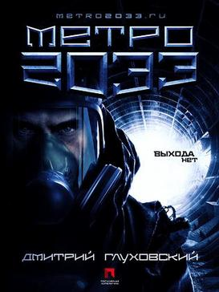
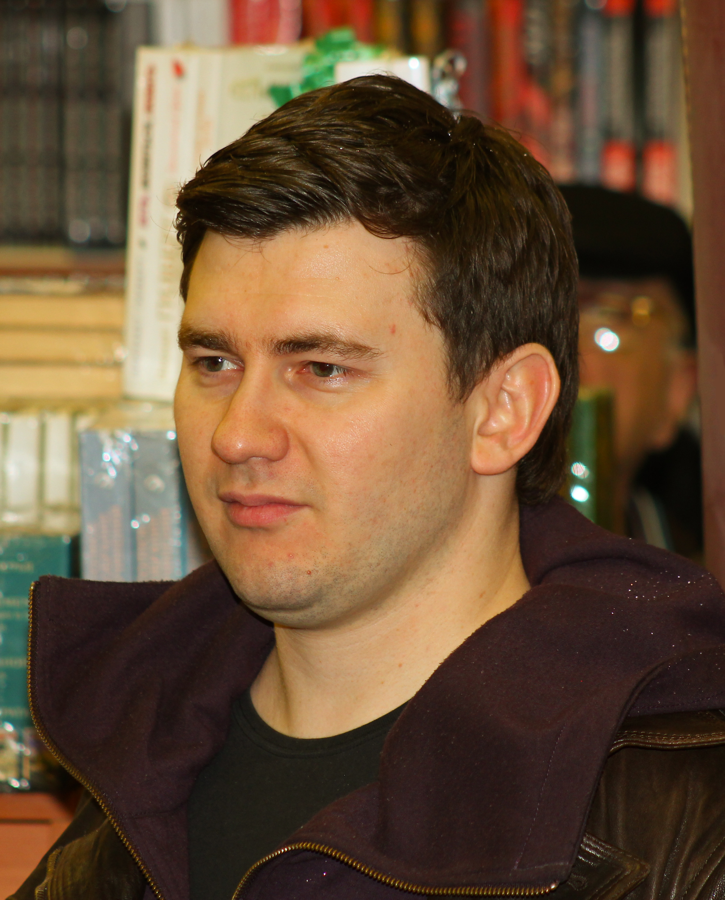

My favorite book
Ulchenko Vadym Alexandrovich
Title of the book:
Metro 2033
Author:
Dmitry Alexeevich Glukhovsky
Genre:
Fantasy
Year of the first edition:
2009
brief description
Post-apocalyptic fiction novel by Russian author Dmitry Glukhovsky. It is set in the Moscow Metro, where the last survivors hide after a global nuclear holocaust. It was published in 2005 in Russia and on March 28, 2010 in the United States
About the author
Russian author[1] and journalist known for Sci-Fi, Magic-Realism, and his exploration of social and political structures. He began writing his first novel, Metro 2033, at the age of 18, and then published it on his website in 2002, available for all to read for free. The novel has become an interactive experiment, drawing in over 3 million readers worldwide. It was published in print form in 2005 in Russia, and 2010 in Great Britain and the U.S. It has since been made into a hugely successful video game series for the Xbox 360, Play Station 3 and PC.
Chapter 1
Chapter 2
Chapter 3
Chapter 4
Chapter 5
Chapter 6
Chapter 7
Chapter 8
Chapter 9
Chapter 10
Chapter 11
Chapter 12
Chapter 13
Chapter 14
Chapter 15
Chapter 16
Chapter 1
„Who‟s there? Artyom - go have a look!‟
Artyom rose reluctantly from his seat by the fire and, shifting the machine gun from his back to his
chest, headed towards the darkness. He stood right at the edge of the lighted area and then, as loudly
and threateningly as he could, he clicked the slide on his gun and shouted gruffly, „Stop! Password!‟
He could hear quick, staccato footsteps in the darkness where moments ago he‟d heard a strange
rustle and hollow-sounding murmurings. Someone was retreating into the depths of the tunnel,
frightened away by Artyom‟s gruff voice and the rattling of his weapon. Artyom hurriedly returned to
the fire and flung an answer at Pyotr Andreevich:
„Nope, no one came forward. No response, they just ran off.‟
„You idiot! You were clearly told. If they don‟t respond, then shoot immediately! How do you
know who that was? Maybe the dark ones are getting closer!‟
„No . . . I don‟t think they were people . . . The sounds were really strange . . . And the footsteps
weren‟t human either. What? You think I don‟t know what human footsteps sound like? And anyway,
when have the dark ones ever run off like that? You know it yourself, Pyotr Andreevich. Lately they‟ve
been lunging forward without hesitation. They attacked a patrol with nothing but their bare hands,
marching straight into machine-gun fire. But this thing, it ran off straight away . . . Like some kind of
scared animal.‟
„All right, Artyom! You‟re too smart for your own good. But you‟ve got instructions - so follow
them, don‟t think about it. Maybe it was a s
tunnel twists and turns just like it does here . . .‟ Artyom felt ill at ease when he heard these words.
„And neither the patrols, nor those at the station could see anything, no matter how much light they
threw at it. No one appeared - for half an hour, then for an hour, then two. They wondered where the
scouts could have gone - they were only going one kilometre in. They weren‟t allowed to go any
further and anyway, they aren‟t total idiots . . . Long story short, they couldn‟t wait to find out. They
sent reinforcements who searched and searched, and shouted and shouted - but it was all in vain. The
patrol was gone. The scouts had vanished. And it wasn‟t just that no one had seen what had happened
to them. The worst part was that they hadn‟t heard a sound . . . not a sound. There was no trace of them
whatsoever.‟
Artyom was already beginning to regret that he had asked Pyotr Andreevich to recount the story of
Polezhaevskaya. Pyotr Andreevich was either better informed, or was embellishing the story
somewhat; but in any case, he was telling details of the sort that the traders couldn‟t have dreamed,
despite being masters and true enthusiasts of story-telling. The story‟s details sent a chill over
Artyom‟s skin, and he became uncomfortable even sitting next to the fire. Any rustlings from the
tunnel, even the most innocent, were now exciting his imagination.
„So, there you have it. They hadn‟t heard any gunfire so they decided that the scouts had simply left
them - maybe they were dissatisfied with something, and had decided to run. So, to hell with them. If
it‟s an easy life they want, if they want to run around with all kinds of riff-raff, then let them run
around to their hearts‟ content. It was simpler to see it that way. Easier. But a week later, yet another
scout team disappeared. And they weren‟t supposed to go any further than half a kilometre from the
station. And again, the same old story. Not a sound, not a trace. Like they‟d vanished into thin air. So
then they started getting worried back at the station. Now they had a real mess on their hands - two
squadrons had disappeared within a week. They‟d have to do something about it. Meaning, they‟d have
to take measures. Well, they set up a cordon at the three-hundredth metre. They dragged sandbags to
the cordon, set up machine guns and a spotlight - according to the rules of fortification. They sent a
runner to Begovaya - they‟d established a confederation with Begovaya and 1905 Street. Initially,
October Field had also been included, but then something had happened, no one knows exactly what -
some kind of accident. Conditions there had become unliveable, and everyone had fled.
„Anyway, then they sent a runner to Begovaya, to warn them that, as they said, trouble was afoot,
and to ask for help, should anything happen. The first runner had only just made it to Begovaya - and
the people there were still considering their answer - when a second runner arrived at Begovaya,
lathered in sweat, and said that their reinforced cordon had perished to a man, without firing a single
shot. Every last one of them had been slaughtered. And it was as if they‟d been butchered in their sleep
- that‟s what was scary! But they wouldn‟t have fallen asleep, not after the scare they‟d had, not to
mention the orders and instructions. At this point, the people at Begovaya understood that if they did
nothing, the same story would begin in their neck of the woods as well. They equipped a strike force of
veterans, about a hundred men, machine guns, and grenade launchers. Of course, that all took a bit of
time, about a day and a half, but all the same, they dispatched the group to go and help. And when the
group entered Polezhaevskaya, there wasn‟t a living soul to be seen. There weren‟t even bodies - just
blood everywhere. There you go. And who knows who the hell did it. I, for one, don‟t believe that
humans are capable of such a thing.‟
„And what happened to Begovaya?‟ Artyom‟s voice sounded unusual, unlike him.
„Nothing happened to them. They saw what the deal was, and exploded the tunnel that led to
Polezhaevskaya. I hear forty metres‟ worth of tunnel is collapsed; there‟s no digging through it without
special machinery, and even with machinery, I bet you wouldn‟t get very far . . . And where are you
going to find that kind of machinery, anyway? Our machinery rotted away fifteen years ago already . .
.‟
Pyotr Andreevich fell silent, gazing into the fire. Artyom gave a loud cough and said,
„Yeah . . . I should‟ve shot the thing, of course . . . I was an idiot.‟
A shout came from the south, from the direction of the station:
„Hey there, at the four-hundredth metre! Everything OK there?‟
Pyotr Andreevich folded his hands into the shape of a megaphone and shouted in reply:
„Come closer! We‟ve got a situation here!‟
Three figures approached in the tunnel, from the station, their flashlights shining - probably patrol
members from the three-hundredth metre. Stepping into the light of the fire, they put out their
flashlights and sat down.
„Hi there, Pyotr! So it‟s you here. And I‟m thinking to myself - who‟d they send off to the edge of
the earth today?‟ said the senior patrolman, smiling and shaking a cigarette from his pack.
„Listen, Andryukha! One of my guys saw someone up here. But he didn‟t get to shoot . . . It hid in
the tunnel. He says it didn‟t look human.‟
„Didn‟t look human? What did it look like, then?‟ Andrey turned to Artyom.
„I didn‟t even see it . . . I just asked for the password, and it ran right off, heading north. But the
footsteps weren‟t human - they were light, and very quick, as if it had four legs instead of two . . .‟
„Or three!‟ winked Andrey, making a scary face.
Artyom choked, remembering the stories about the three-legged people from the Filevskaya line
where some of the stations went up to the surface, and the tunnel didn‟t run very deep at all, so they
had almost no protection from the radiation. There were three-legged things, two-headed things and all
kinds of weird shit crawling all over the metro from those parts.
Andrey took a drag of his cigarette and said to his men, „All right, guys, since we‟re already here
why don‟t we sit down for a while? If any three-legged things crawl up on these guys again, we‟ll lend
a hand. Hey, Artyom! Got a kettle?‟
Pyotr Andreevich got up and poured some water from a canister into a beat-up, soot-covered kettle,
and hung it over the flame. In a few minutes, the kettle began to whistle as it came to a boil. The sound,
so domestic and comforting, made Artyom feel warmer and calmer. He looked around at the men who
were sitting at the fire: all of them strong dependable people, hardened by the challenging life they led
here. You could trust men like these; you could count on them. Their station always had the reputation
for being the most successful along the entire line - and that was all thanks to the men gathered here,
and to others like them. They were all connected to each other with warm, almost brotherly bonds.
Artyom was just over twenty years old and had come into the world when life was still up there, on
the surface. He wasn‟t as thin and pale as the others who‟d been born in the metro, who wouldn‟t dare
go up to the surface for fear of radiation and the searing rays of the sun, which are so ruinous for
underground dwellers. True, even Artyom, as far as he could remember, had been on the surface only
once, and then it was only for a moment - the background radiation there had been so bad that anyone
who got a bit too curious would be completely fried within a couple of hours, before he‟d even
managed to enjoy a good stroll, and see his fill of the bizarre world that lay on the surface.
He didn‟t remember his father at all. His mother had been with him until he was five years old.
They lived at Timiryazevskaya. Things had been good, and life had gone smoothly and peacefully,
until Timiryazevskaya fell victim to a rat infestation.
One day, huge, grey, wet rats poured from one of the tunnels on the dark side of the station without
any warning. It was a tunnel that plunged off to the side, a disregarded branch of the primary northern
leg, which descended to great depths, only to become lost in the complex network of hundreds of
corridors - freezing, stinking labyrinths of horror. The tunnel stretched into the kingdom of rats, where
even the most hopeless adventurer wouldn‟t dare to go. Even a wanderer who was lost and couldn‟t
find his way using underground maps and paths, would stop at this threshold, sensing instinctively the
black and sinister danger emerging from it, and would have rushed away from the gaping crevasse of
that entrance as though from the gates of a plague-infested city.
No one bothered the rats. No one descended into their dominions. No one dared to violate their
borders.
They came to the people.
Many people perished that day, when a living torrent of gigantic rats - bigger than had ever been
seen at either the stations or in the tunnels - had flooded through the cordons and the station, burying all
of its defenders and its population, muffling their dying screams with the mass of its bodies.
Consuming everything in their path - the living, the dead, and their own fallen comrades - the rats tore
ahead, further and further, blindly, inexorably, propelled by a force beyond human comprehension.
Only a few men remained alive. No women, no old men or children - none of the people who
would normally have been saved first, but rather five healthy men who had managed to keep ahead of
the death-wreaking torrent. And the only reason they‟d outrun it was because they‟d happened to be
standing near a trolley, on watch in the southern tunnel. Hearing the shouts from the station, one of
them sprinted to see what had happened. Timiryazevskaya was already perishing when he caught sight
of it as he entered the station. At the station‟s entrance, he understood what had happened from the first
rivulets of rats seeping onto the platform and he was about to turn back, knowing that he couldn‟t
possibly help those who were defending the station, when suddenly his hand was seized from behind.
He turned around and a woman, her face contorted with horror, pulling insistently at his sleeve,
shouted, in an effort to overcome the many-voiced choir of despair, „Save him, soldier! Have mercy!‟
He saw that she was handing him a child‟s hand, a small, chubby hand, and he grabbed the hand
without even thinking that he was saving someone‟s life. And, pulling the child behind him and then
picking him up and tucking him under his arm, he raced off with the frontrunner rats in a race with
death - forward through the tunnel, where the trolley was waiting with his fellow patrolmen. He started
to shout at them from afar, from a distance of fifty metres or so, telling them to start up the trolley.
Their trolley was motorized, the only one of its kind in the surrounding ten stations, and it was only
because of it that they were able to outrun the rats. The patrolmen raced forward, and flew through the
abandoned station of Dmitrovskaya at full speed, where a few hermits had sought shelter, just
managing to shout to them: „Run! Rats!‟ (Without realizing that there was no chance of the hermits
saving themselves.) As they approached the cordons of Savyolovskaya (with whom, thank God, they
had peaceful arrangements), they slowed down so they wouldn‟t be fired at. They would have been
taken for raiders at such high speed. And they shouted at the top of their lungs to the guards, „Rats! The
rats are coming!‟ They were prepared to keep running right through Savyolovskaya, and further along
the line, prepared to beg to be let through, as long as there was somewhere further to go, as long as the
grey lava hadn‟t inundated the entire metro.
Chapter 2
The Hunter
Once again, all sorts of nonsense started filling Artyom‟s head. The dark ones . . . He‟d come
across those damn non-humans only once during his watch, and he‟d been scared silly - but how could
he not have been . . .
So, you‟re sitting there on watch. You‟re warming yourself by the fire. And suddenly you hear it:
from the tunnel, from somewhere in the depths, a regular, dull knocking rings out - first, in the
distance, quietly, and then, ever closer, and ever louder . . . And suddenly your ears are struck by a
horrible, graveyard howl, and it‟s coming closer . . . And then complete mayhem! Everyone jumps up;
they heap the sandbags and crates on which they‟d been sitting into a barrier - quickly so that there‟d
be something to hide behind. And the most senior among them shouts with all his might, at the top of
his lungs, „Alert!‟
Reserves rush in from the station to give support; at the three-hundredth metre where the main blow
will have to be absorbed, they pull the cover from the machine gun, and people throw themselves to the
ground, behind the sandbags, directing their guns at the mouth of the tunnel, taking aim . . . Finally,
having waited for the dark ones to draw closer, they turn on the spotlight, and strange, delirious
silhouettes become visible in
Artyom were returning to the station while Andrey and his men were returning to the three hundredth
metre since their shift there hadn‟t quite ended.
Their replacements walked up and exchanged handshakes, ascertained whether or not anything
strange or peculiar had happened, wished each other the relaxation they deserved, and sat down a bit
closer to the fire, continuing a conversation they‟d begun earlier.
When everyone was already headed south along the tunnel, towards the station, Pyotr Andreevich
began speaking heatedly with Andrey about something, apparently returning to one of their eternal
disputes; and the husky guy with the shaved head, who had questioned them concerning the dark ones‟
eating habits, fell away from them, drawing even with Artyom, and beginning to walk in step with him.
„So then, you know Sukhoi?‟ he asked Artyom in a low, muffled voice, without looking him in the
eye.
„Uncle Sasha! Well, yes! He‟s my stepfather. I live with him,‟ answered Artyom honestly.
„You don‟t say . . . Your stepfather? I‟ve never heard of such . . .‟ muttered the man.
„And what‟s your name?‟ Artyom decided to ask, having reasoned that if someone questions you
about your own relative, then that gives you the right to ask a question in return.
„My name?‟ asked the man, surprised. „Why do you need to know?‟
„Well, I‟ll tell Uncle Sasha, Sukhoi, that you were asking after him.‟
„Tell him that Hunter was asking. Hunter. Tell him I said hello.‟
„Hunter? That‟s an odd name. What is it, your last name? Your nickname?‟ Artyom asked.
„Last name? Hmm . . .‟ Hunter smirked. „What of it? It‟s totally . . . No, son, it‟s not a last name.
It‟s . . . how should I put it . . . A profession. And what‟s your name?‟
„Artyom.‟
„Fine then. Nice to meet you. I‟m sure we‟ll see each other again. And fairly soon at that. Cheers!‟
Giving Artyom a wink before parting, he remained behind at the three-hundredth metre, along with
Andrey.
There wasn‟t much further to go; from a distance, the lively noise of the station could already be
heard. Pyotr Andreevich, walking alongside Artyom, asked him worriedly:
„Listen, Artyom, who was that, anyway? What was he saying to you back there?‟
„He was a strange sort of guy . . . He was asking about Uncle Sasha. An acquaintance of his, I
guess? Do you know him?‟
„Don‟t seem to . . . He‟s just come to our station for a couple of days, on some sort of business, it
seems. Looks like Andrey has already met him; he was the one who insisted on being on the same
watch with him. Who the hell knows why he found that so necessary! His face is somehow familiar . .
.‟
„Yeah. It‟s probably hard to forget an appearance like that,‟ said Artyom.
„Exactly. Where was it that I saw him? What‟s his name - do you know?‟ inquired Pyotr
Andreevich.
„Hunter. That‟s what he said - Hunter. Just try and figure out what that‟s supposed to be.‟
„Hunter? Not a Russian name . . .‟ frowned Pyotr Andreevich.
In the distance, a red glow had already appeared. VDNKh like the majority of stations, didn‟t have
normal lighting and, for thirty years now, people had lived under scarlet emergency lights. Only
occasionally were there normal electric light bulbs in their „apartments‟ - their tents and rooms. And
only a few of the wealthiest metro stations were illuminated by the light of genuine mercury lamps.
Legends had formed around them, and provincial types, from distant, god-forsaken substations, would
nourish the dream for years on end of making it there and beholding this miracle.
At the tunnel exit, they handed over their weapons to the other guards, and signed their names in
the ledger. Pyotr Andreevich shook Artyom‟s hand before parting and said:
„It‟s about time we hit the sack! I can barely stand on my feet, and you‟re probably ready to sleep
standing up yourself. Give Sukhoi my warmest regards. He should pay me a visit.‟
Artyom said goodbye and feeling the sudden onset of fatigue, took himself off to his „apartment.‟
Two hundred people lived at VDNKh. Some in the service quarters, but the majority in tents on the
platform. The tents were army-issue, now old, tattered, but still intact. They didn‟t have to contend with
wind or rain underground, and they were well maintained so it was easily possible to live in them. They
didn‟t lose heat or light, and they even kept out the noise. What more could one ask of one‟s housing? .
. .
The tents were tucked up against the wall on either side - both along the tracks, and in the central
hall. The platform had been turned into something resembling a street: there was a fairly wide passage
along its middle. Some of the tents were large, housing the more numerous families and they occupied
the space beneath the archways. But several arches remained free for passage - at each end of the hall,
and at its centre. There were other accommodations below the platforms as well, but the ceiling there
wasn‟t very high, and they weren‟t very suitable for habitation. They used them at VDNKh for the
storage of provisions.
The two northern tunnels were joined by a side tunnel, several tens of metres beyond the station,
which, once upon a time, allowed trains to turn around and head back in the other direction. Now one
of these two tunnels was plugged up; the other led to the north, towards the Botanical Garden, and
almost to Mytischi. They‟d left it as a retreat route in the case of extreme circumstance, and it was there
that Artyom had been on watch. The remaining segment of the second tunnel, and the unified stretch
between the two tunnels, was designated for mushroom plantations. The rails there had been
dismantled and the ground had been tilled and fertilized - they hauled waste products there from the
cesspit. Tidy rows of mushroom caps shone white along the tunnel. One of the two southern tunnels
had been collapsed as well, at the three-hundredth metre, and they used that area for chicken coops and
pigpens.
Artyom‟s home stood on the main thoroughfare - he lived there in one of the smaller tents together
with his stepfather. His stepfather was an important man associated with the administration. He
maintained contact with other stations so the powers that be reserved the tent for him - it was granted to
him as his own personal tent, and it was a first-rate one at that. His stepfather would frequently
disappear for two or three weeks at a time, and never took Artyom with him, excusing himself by
saying that he was occupied with matters too dangerous, and didn‟t want to subject Artyom to any risk.
He‟d return from his trips thinner, his hair unkempt, sometimes wounded. But the first evening of his
return he would always sit with Artyom, telling him things that were hard to believe even for a resident
of this grotesque little world, and one who was used to unbelievable stories.
Artyom felt the urge to travel himself, but to wander around in the metro for no good reason was
too dangerous. The patrol guards at independent stations were very suspicious, and wouldn‟t let a
person pass with a weapon - and heading off into the tunnels without a weapon meant certain death.
And so, ever since he and his grandfather had come from Savyolovskaya, Artyom hadn‟t had the
chance to take part in any decent excursions. He‟d sometimes be sent to Alekseevskaya on business but
he didn‟t go alone, of course. They went in group, sometimes as far as Rizhskaya. But on top of that, he
had one more trip under his belt, about which he couldn‟t tell anyone, although he desperately wanted
to . . .
It happened a long, long time ago, when there wasn‟t even the slightest hint of the dark ones at the
Botanical Garden, when it was simply an abandoned and dark station, and patrols from VDNKh
were stationed much further to the north. At the time Artyom himself was still just a kid. Back then, he
and his buddies decided to take a risk: during a shift change, they stole past the outer cordon with
flashlights and a double-barrelled rifle stolen from someone‟s parents, and crawled for a long time
around the Botanical Garden station. It was eerie, but it was interesting. In the light of the flashlights,
you could see the remnants of human habitation everywhere: ash, singed books, broken toys, torn
clothing . . . Rats darted about, and from time to time, strange rumbling sounds would ring out from the
northern tunnel. One of Artyom‟s friends - he didn‟t even remember who it was anymore but it was
probably Zhenya, the most lively and most curious of the three - said, „What if we try to take down the
barrier and go up to the surface, up the escalator . . . just to see what it‟s like there? To see what‟s
there?‟
Artyom had said right away that he was against it. The recent tales his stepfather told him about
people who had spent time on the surface were fresh in his mind, about how afterwards they had long
been sick, and about the sorts of horrors sometimes seen up there. But they immediately began to argue
that this was a rare opportunity. When else would they manage to make it, with no adults, to an
abandoned station, as they had now? And now they had the chance to go up to the surface too, and see,
see with their own eyes, what it‟s like to have nothing above your head. And, resigning all hope of
convincing him nicely, they declared that if he was such a coward, then he could sit down below and
wait for them to come back. The thought of staying alone in an abandoned station, and, on top of that,
besmirching his reputation in the eyes of his two best friends, was completely unbearable to Artyom.
So, summoning his courage, he consented.
To everyone‟s surprise, the mechanism that brought the barrier dividing the platform from the
escalator into motion actually worked. And it was Artyom himself who managed to start it up after half
an hour of desperate attempts. The rusty iron wall moved aside with a nasty grating sound and before
their eyes stood the short row of steps of the escalator, leading upwards. Some of the steps had
collapsed and, through the yawning gaps, in the light of the flashlights, one could see colossal gears
that had stopped years ago, corroded with rust, grown over with something brownish that was moving,
just barely noticeably . . . It wasn‟t easy for them to force themselves to go up there. Several times, the
steps they stepped on gave way with a screech, and dropped below, and they climbed across the
chasm, clinging to the old hulls of the metro lamps. The path to the surface wasn‟t long, but their initial
determination was evaporating after that first collapsed step; and in order to raise their spirits, they
imagined themselves to be real stalkers.
Stalkers . . .